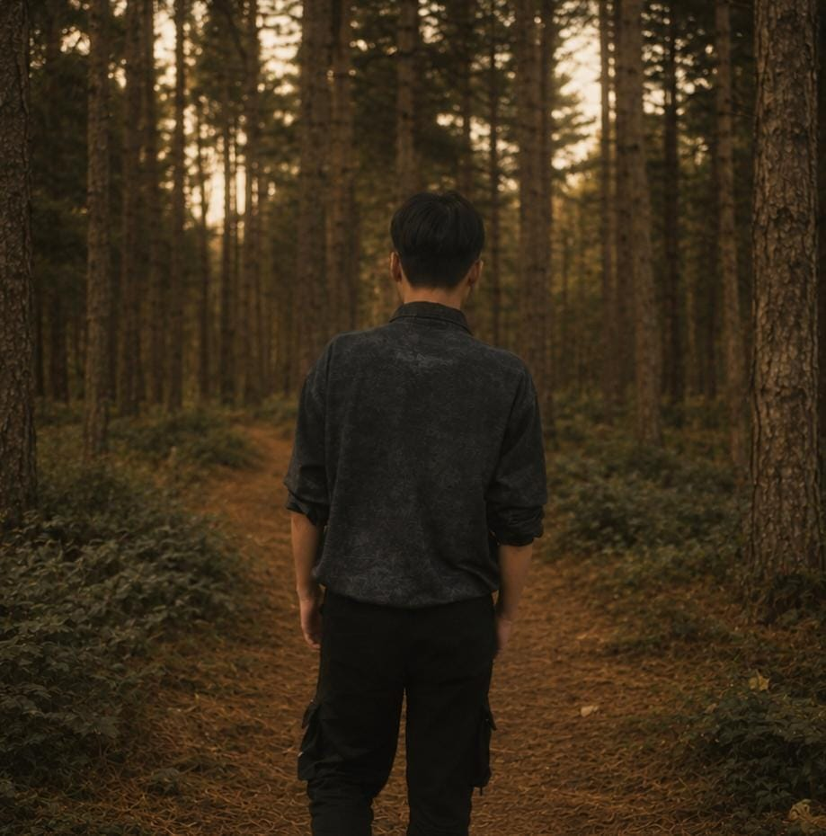

Informasi
Jasson Fico
Saverio
Aku siswa SMK kelas XI yang menekuni jurusan IT — fokusnya di dunia komputer dan jaringan. Bagiku, TKJ itu bukan cuma soal kabel dan konfigurasi, tapi cara berpikir sistematis dalam menyusun sesuatu yang saling terhubung.
Aku punya keinginan besar untuk terus menggali lebih dalam soal dunia IT dan teknologi. Salah satu cara aku belajar sekarang adalah lewat AI — aku terbiasa menyusun prompt untuk riset, merangkum materi, dan membantu menyelesaikan tugas dengan lebih efisien.
"Learning, Building, Improving."

Perjalanan
Momen Penting
-
Kelas X
Mengenal dunia IT dan jaringan
Mulai mengenal dasar komputer dan jaringan lewat pelajaran jurusan TKJ di SMK.
-
Kelas XI — sekarang
Mendalami AI & membangun portofolio
Belajar menyusun prompt yang efektif untuk riset dan tugas, sambil menyusun portofolio digital ini dan terus menggali lebih dalam materi komputer dan jaringan.